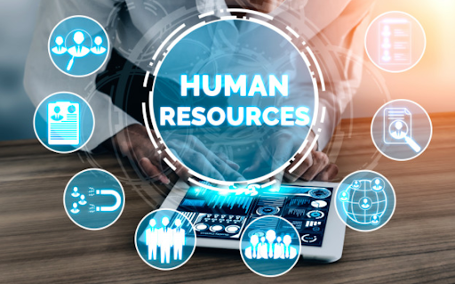

AD² Conseils & Services : Propulsez votre entreprise vers de nouveaux sommets
AD² Conseils & Services n'est pas un simple cabinet de conseil. C'est un véritable partenaire de croissance, un accélérateur de succès, un catalyseur de performance. Notre équipe d'experts passionnés est dédiée à l'accomplissement de vos ambitions, à la réalisation de vos rêves les plus audacieux.
Nos services :
Finances
Analyse financière (Compétitivité économique, la pérennité financière, le potentiel de développement d’une entreprise)
Gestion de trésorerie
Contrôle et Audit financier
Contrôle de gestion
Elaboration de tableau de bord
Conseil en investissement
Comptabilité
Tenue mensuelle de la comptabilité des entreprises
Suivi mensuel de la comptabilité des entreprises pour validation
Elaboration de l’état de déclaration annuelle de salaire
Elaboration des Etats Financiers
Conseils de la bonne tenue de la comptabilité
Fiscalité
Enregistrement social des employés
Suivi des déclarations fiscales et sociales mensuelles et ou annuelles des entreprises
Elaboration des DNR
Conseils fiscaux
Création d’entreprise :
Réalisation d’étude de marché
Etude et analyse de la viabilité du projet de création
Montage de business plan
Rédaction des documents et les démarches administratives
Rédaction de pacte d’actionnaire
Le lean startup
Elaboration de manuel de procédure
Montage de dossier d’appel d’offres
Marketing et vente
Etude et Analyse de marché (besoins et attentes des clients) et détection des opportunités de développement ou pour la création d’entreprise
Elaboration et exécution des stratégies, plans et budgets marketing et commerciaux avec réalisation des bilans
Conception et exécution de campagnes promotionnelle de produits avec les techniques de vente adaptées
Organisation du Service ou de l’agence commercial.e
Management de l’équipe marketing et commerciale
Le marketing digital
Etude de la concurrence et la Veille concurrentielle
Stratégie
Définition et mise en œuvre de démarche stratégique pour les entreprises
L’analyse stratégique des entreprises pour la meilleure option stratégique
Le diagnostic d’entreprise pour sa restructuration, son renforcement et ou son redressement
Elaboration et suivi d’exécution de plan stratégique
Elaboration et suivi d’exécution de stratégie et de plan de croissance
Gestion des risques
Innovation
Innovation Pour plus de rentabilité, de développement et de compétitivité :
L’élaboration de la stratégie d’innovation par l’étude de :
L’organisation de l’entreprise
La chaine (totale ou partie) du travail
L’environnement interne et externe ; micro et macro de l’entreprise
Définition de stratégie d’innovation
Elaboration et suivi d’exécution de plan d’innovation :
Choix du processus d’innovation adapté à votre entreprise
Choix des outils d’innovation adaptés à votre entreprise
Conduite de l’innovation
Gestion de portefeuille d’innovation
Développement de culture d’innovation en entreprise
Management
Coaching en management d’entreprise
Coaching en pilotage stratégique d’entreprise
Management de qualité
Politique et organisation de qualité
Les outils de qualité
La documentation
Management de performance d’entreprise
Elaboration et exécution de plan d’amélioration de la productivité, la rentabilité et la compétitivité d’entreprise
Management Coaching en management d’entreprise
Coaching en pilotage stratégique d’entreprise
Management de qualité
Politique et organisation de qualité
Les outils de qualité
La documentation
Management de performance d’entreprise
Elaboration et exécution de plan d’amélioration de la productivité, la rentabilité et la compétitivité d’entreprise
Définition des indicateurs de performance
Mesure, l’évaluation et le développement de la performance d’entreprise
Le lean management
Le management visuel en entreprise et construction de carte mentale
Organisation
Organisation Organisation et gestion administrative, financière et commerciale des entreprises
Définition de gouvernance d’entreprise
Etude et organisation de la chaine (totale ou partie) du travail
Diagnostic organisationnel
Création et gestion de projet d’amélioration de processus
Définition et mise en œuvre de l’approche processus

Gestion de Ressources Humaines
Définition d’une stratégie Ressources Humaines
Organisation de la GRH
Gestion du personnel
Gestion de carrière
Gestion des compétences
Recrutement des profils pertinents
Gestion de la mobilité interne avec l’adéquation compétences-poste occupé
Elaboration et suivi d’exécution de plan de développement des compétences
Elaboration et suivi d’exécution de plan de formation
Conduite de l’entretien annuel d’évaluation
Conseils en motivation de vos collaborateurs
Conseils et suivi de fidélisation de vos talents
Mise en place de la GPEC
Digitalisation des entreprises
Etude, organisation, innovation et digitalisation de la chaine (totale ou partie) du travail
Etude, digitalisation, amélioration et digitalisation de processus
Proposition et conduite d’Innovation technologique
Création de site web et d’application mobile
Edition de logiciel
Le hacking éthique
Gestion de projets
Pour des projets de développement comme économiques :
Cadrage
Conception et rédaction
Réalisation ou suivi de réalisation
Clôture et suivi-évaluation
Gestion de portefeuille de projet
Formation
Former vos équipes en :
Organisation et planification au travail
Gestion efficace du temps au travail
Amélioration de votre performance professionnelle
Gérer sa carrière professionnelle
Gestion des émotions
Valoriser ses soft skills
Bien-être au travail
AD² Conseils & Services, Bien plus qu'un simple Cabinet Conseil, un véritable partenaire de votre réussite.
Imaginez…
Décrypter les complexités du marché et identifier les opportunités cachées.
Définir une stratégie limpide et infaillible pour atteindre vos objectifs.
Déployer des solutions innovantes et personnalisées pour booster votre performance.
Bénéficier d'un accompagnement sur mesure tout au long de votre transformation.
Avec AD² Conseils & Services, tout est possible.
Notre approche unique :
Une vision holistique de votre entreprise pour une stratégie sur mesure.
Une expertise pluridisciplinaire pour une réponse à 360° de vos besoins.
Un engagement sans faille pour votre réussite et votre satisfaction.
Une méthodologie éprouvée pour des résultats tangibles et mesurables.
Une innovation constante pour vous garder à la pointe de votre secteur.
Contactez-nous dès aujourd'hui et laissez-nous vous guider vers les sommets du succès.